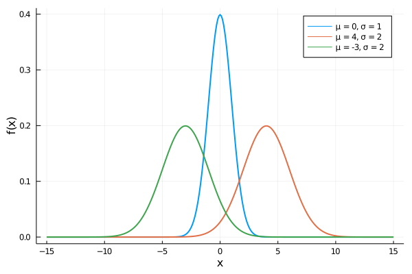
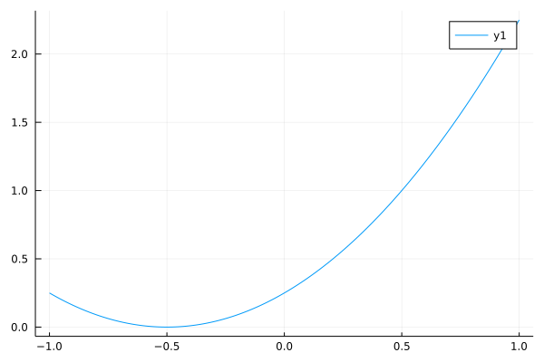

Functions
In Julia, a function is an object that maps a tuple of argument values to a return value. There are multiple ways to create a function. Each of them is useful in different situations. The first way is the function ... end syntax.
function plus(x,y)
x + y
endThe plus function accepts two arguments x and y, and returns their sum.
julia> plus(2, 3)
5
julia> plus(2, -3)
-1By default, functions in Julia return the last evaluated expression, which was x + y. It is useful to return something else with the return keyword in many situations. The previous example is equivalent to:
function plus(x,y)
return x + y
endEven though both functions do the same, it is always good to use the return keyword. It usually improves code readability and can prevent potential confusion.
function plus(x, y)
return x + y
println("I am a useless line of code!!")
endThe example above contains the println function on the last line. However, if the function is called, nothing is printed into the REPL. The happened because expressions after the return keyword are never evaluated.
julia> plus(4, 5)
9
julia> plus(3, -5)
-2It is also possible to return multiple values at once. This can be done by writing multiple comma-separated values after the return keyword (or on the last line when return is omitted).
function powers(x)
return x, x^2, x^3, x^4
endThis syntax creates a tuple of values, and then this tuple is returned as a function output. The powers function returns the first four powers of the input x.
julia> ps = powers(2)
(2, 4, 8, 16)
julia> typeof(ps)
NTuple{4,Int64}Since the function returns a tuple, returned values can be directly unpacked into multiple variables. This can be done in the same way as unpacking tuples.
julia> x1, x2, x3, x4 = powers(2)
(2, 4, 8, 16)
julia> x3
8Write function power(x::Real, p::Integer) that for a number $x$ and a (possibly negative) integer $p$ computes $x^p$ without using the ^ operator. Use only basic arithmetic operators +, -, *, / and the if condition. The annotation p::Integer ensures that the input p is always an integer.
Hint: use recursion.
Solution:
To use recursion, we have to split the computation into three parts:
p = 0: the function should return1.p > 0: the function should be called recursively with argumentsx,p - 1and the result should be multiplied byx.p < 0: then it is equivalent to call the power function with arguments1/x,-p.
These three cases can be defined in one if condition as follows:
function power(x::Real, p::Integer)
if p == 0
return 1
elseif p > 0
return x * power(x, p - 1)
else
return power(1/x, -p)
end
endWe use type annotation for function arguments to ensure that the input arguments are always of the proper type. In the example above, the first argument must be a real number, and the second argument must be an integer.
julia> power(2, 5)
32
julia> power(2, -2)
0.25
julia> power(2, 5) == 2^5
true
julia> power(5, -3) == 5^(-3)
trueIf we call the function with arguments of wrong types, an error will occur.
julia> power(2, 2.5)
ERROR: MethodError: no method matching power(::Int64, ::Float64)
[...]We will discuss type annotation later in the section about methods.
One-line functions
Besides the traditional function declaration syntax above, it is possible to define a function in a compact one-line form
plus(x, y) = x + ythat is equivalent to the previous definition of the plus function
julia> plus(4, 5)
9
julia> plus(3, -5)
-2This syntax is similar to mathematical notation, especially in combination with the Greek alphabet. For example, function
\[f(\varphi) = - 4 \cdot \sin\left(\varphi - \frac{\pi}{12}\right)\]
can be in Julia defined in an almost identical form.
f(φ) = -4sin(φ - π/12)The one-line syntax also allows to create more complex functions with some intermediate calculations by using brackets and semicolons to separate expressions. The last expression in brackets is then returned as the function output.
g(x) = (x -= 1; x *= 2; x)In this example, the g function subtracts 1 from the input x and then returns its multiplication by 2.
julia> g(3)
4However, for better code readability, the traditional multiline syntax is preferred for more complex functions.
Write a one-line function that returns true if the input argument is an even number and false otherwise.
Hint: use modulo function and ternary operator ?.
Solution:
From the section about the ternary operator, we know that the syntax
a ? b : cmeans: if a is true, evaluate b; otherwise, evaluate c. Since even numbers are divisible by 2, we can check it by the modulo function mod(x, 2) == 0. This results in the following function.
even(x::Integer) = mod(x, 2) == 0 ? true : falseWe again used type annotation to ensure that the argument is an integer.
julia> even(11)
false
julia> even(14)
trueOptional arguments
It is advantageous to use predefined values as function arguments in many cases. Arguments with a default value are typically called optional arguments. Like in Python, optional arguments can be created by assigning a default value to the normal argument. The following function has only one argument, which is optional with the default value world.
hello(x = "world") = println("Hello $(x).")Since the argument is optional, we can call the function without it. In such a case, the default value is copied to the argument value. If the function is called with a non-default value, the default value is ignored.
julia> hello()
Hello world.
julia> hello("people")
Hello people.In the same way, it is possible to define multiple optional arguments. It is even possible to define optional arguments that depend on other arguments. However, these arguments must be sorted: mandatory arguments must always precede optional arguments.
powers(x, y = x*x, z = y*x, v = z*x) = x, y, z, vThis function has one mandatory and three optional arguments. If only the first argument x is provided, the function returns its first four powers.
julia> powers(2)
(2, 4, 8, 16)Otherwise, the function output depends on the given input arguments. For example, if two arguments x and y are provided, the function returns these two arguments unchanged together with x*y and x^2*y.
julia> powers(2, 3)
(2, 3, 6, 12)The optional arguments can depend only on the previously defined arguments; otherwise, an error occurs.
f(x = 1, y = x) = (x, y)
g(x = y, y = 1) = (x, y)The definition of f is correct, and the definition of g is incorrect since the variable y is not defined when we define x.
julia> f()
(1, 1)
julia> g()
ERROR: UndefVarError: y not defined
[...]Write a function which computes the value of the following quadratic form
\[q_{a,b,c}(x,y) = ax^2 + bxy + cy^2,\]
where $a, b, c, x \in \mathbb{R}$. Use optional arguments to set default values for parameters
\[a = 1, \quad b = 2a, \quad c = 3(a + b).\]
What is the function value at point $(4, 2)$ for default parameters? What is the function value at the same point if we use $c = 3$?
Solution:
The quadratic form can be implemented as follows:
q(x, y, a = 1, b = 2*a, c = 3*(a + b)) = a*x^2 + b*x*y + c*y^2Since we want to evaluate $q$ at $(4, 2)$ with default parameters, we can use only the first two arguments.
julia> q(4, 2)
68In the second case, we want to evaluate the function at the same point with $c = 3$. However, it is not possible to set only the last optional argument. We have to set all previous optional arguments too. For the first two optional arguments, we use the default values, i.e., a = 1 and b = 2*a = 2.
julia> q(4, 2, 1, 2, 3)
44Keyword arguments
The previous exercise shows the most significant disadvantage of optional arguments: It is impossible to change only one optional argument unless it is the first one. Luckily, keyword arguments can fix this issue. The syntax is the same as for optional arguments, with one exception: Use a semicolon before the first keyword argument.
linear(x; a = 1, b = 0) = a*x + bThis function is a simple linear function, where a represents the slope, and b means the intercept. We can call the function with the mandatory arguments only.
julia> linear(2)
2We can also change the value of any keyword argument by assigning a new value to its name.
julia> linear(2; a = 2)
4
julia> linear(2; b = 4)
6
julia> linear(2; a = 2, b = 4)
8The semicolon is not mandatory and can be omitted. Moreover, the order of keyword arguments is arbitrary. It is even possible to mix keyword arguments with positional arguments, as shown in the following example.
julia> linear(b = 4, 2, a = 2) # If you use this, you will burn in hell. Also, Vasek does not check my changes :D
8However, this is a horrible practice and should never be used.
Julia also provides one nice feature to pass keyword arguments. Imagine that we have variables a and b, and we want to pass them as keyword arguments to the linear function defined above. The standard way is:
julia> a, b = 2, 4
(2, 4)
julia> linear(2; a = a, b = b)
8Julia allows a shorter version which can be used if the variable name and the name of the keyword argument are the same. In such a case, we may use the following simplification.
julia> linear(2; a, b)
8Write a probability density function for the Gaussian distribution
\[f_{\mu, \sigma}(x) = \frac{1}{\sigma \sqrt{ 2\pi }} \exp\left\{ -\frac{1}{2} \left( \frac{x - \mu}{\sigma} \right) ^2 \right\},\]
where $\mu \in \mathbb{R}$ and $\sigma^2 > 0$. Use keyword arguments to obtain the standardized normal distribution ($\mu = 0$ and $\sigma = 1$). Check that the inputs are correct.
Bonus: verify that this function is a probability density function, i.e., its integral equals 1.
Solution:
The probability density function for the Gaussian distribution equals to
function gauss(x::Real; μ::Real = 0, σ::Real = 1)
σ > 0 || error("the variance `σ^2` must be positive")
return exp(-1/2 * ((x - μ)/σ)^2)/(σ * sqrt(2*π))
endWe used type annotation to ensure that all input arguments are real numbers. We also checked whether the standard deviation $\sigma$ is positive.
julia> gauss(0)
0.3989422804014327
julia> gauss(0.1; μ = 1, σ = 1)
0.2660852498987548The integral of the probability density function over all real numbers should equal one. We can check it numerically by discretizing the integral into a finite sum.
julia> step = 0.01
0.01
julia> x = -100:step:100;
julia> sum(gauss, x) * step
1.0000000000000002
julia> g(x) = gauss(x; μ = -1, σ = 1.4);
julia> sum(g, x) * step
1.0000000000000007We use the sum function, which can accept a function as the first argument and apply it to each value before summation. The result is the same as sum(gauss.(x)). The difference is that the former, similarly to generators, does not allocate an array. The summation is then multiplied by the stepsize 0.01 to approximate the continuous interval [-100, 100].
We can also visualize the probability density functions with the Plots.jl package.
using Plots
x = -15:0.1:15
plot(x, gauss.(x); label = "μ = 0, σ = 1", linewidth = 2, xlabel = "x", ylabel = "f(x)");
plot!(x, gauss.(x; μ = 4, σ = 2); label = "μ = 4, σ = 2", linewidth = 2);
plot!(x, gauss.(x; μ = -3, σ = 2); label = "μ = -3, σ = 2", linewidth = 2);
Variable number of arguments
It may be convenient to define a function that accepts any number of arguments. Such functions are traditionally known as varargs functions (abbreviation for variable number of arguments). Julia defines the varargs functions by the triple-dot syntax (splat operator) after the last positional argument.
nargs(x...) = println("Number of arguments: ", length(x))The arguments to this function are packed into a tuple x and then the length of this tuple (the number of input arguments) is printed. The input arguments may have different types.
julia> nargs()
Number of arguments: 0
julia> nargs(1, 2, "a", :b, [1,2,3])
Number of arguments: 5The splat operator can also be used to pass multiple arguments to a function. Imagine the situation, where we want to use values of a tuple as arguments to a function. We can do this manually.
julia> args = (1, 2, 3)
(1, 2, 3)
julia> nargs(args[1], args[2], args[3])
Number of arguments: 3The simpler way is to use the splat operator to unpack the tuple of arguments directly to the function.
julia> nargs(args...)
Number of arguments: 3This is different from the case where the tuple is not unpacked.
julia> nargs(args)
Number of arguments: 1The same syntax can be used for any iterable object, such as ranges or arrays.
julia> nargs(1:100)
Number of arguments: 1
julia> nargs(1:100...)
Number of arguments: 100
julia> nargs([1,2,3,4,5])
Number of arguments: 1
julia> nargs([1,2,3,4,5]...)
Number of arguments: 5It is also possible to use the same syntax to define a function with an arbitrary number of keyword arguments. Consider the following situation, where we want to define a function that computes the modulo of a number and then rounds the result. To define this function, we can use the combination of the mod and round functions. Since round has many keyword arguments, we want to have an option to use them. In such a case, we can use the following syntax to define the roundmod function.
roundmod(x, y; kwargs...) = round(mod(x, y); kwargs...)With this simple syntax, we can pass all keyword arguments to the round function without defining them in the roundmod function.
julia> roundmod(12.529, 5)
3.0
julia> roundmod(12.529, 5; digits = 2)
2.53
julia> roundmod(12.529, 5; sigdigits = 2)
2.5This construction is beneficial whenever there are multiple chained functions, and only the deepest ones need keyword arguments.
Write a function wrapper, that accepts a number and applies one of round, ceil or floor functions based on the keyword argument type. Use the function to solve the following tasks:
- Round
1252.1518to the nearest larger integer and convert the resulting value toInt64. - Round
1252.1518to the nearest smaller integer and convert the resulting value toInt16. - Round
1252.1518to2digits after the decimal point. - Round
1252.1518to3significant digits.
Solution:
The one way to define this function is the if-elseif-else statement.
function wrapper(x...; type = :round, kwargs...)
if type == :ceil
return ceil(x...; kwargs...)
elseif type == :floor
return floor(x...; kwargs...)
else
return round(x...; kwargs...)
end
endThe type keyword argument is used to determine which function should be used. We use an optional number of arguments as well as an optional number of keyword arguments.
julia> x = 1252.1518
1252.1518
julia> wrapper(Int64, x; type = :ceil)
1253
julia> wrapper(Int16, x; type = :floor)
1252
julia> wrapper(x; digits = 2)
1252.15
julia> wrapper(x; sigdigits = 3)
1250.0The second way to solve this exercise is to use the fact that it is possible to pass functions as arguments. We can omit the if conditions and directly pass the appropriate function.
wrapper_new(x...; type = round, kwargs...) = type(x...; kwargs...)In the function definition, we use the type keyword argument as a function and not as a symbol.
julia> wrapper_new(1.123; type = ceil)
2.0If we use, for example, a Symbol instead of a function, an error will occur.
julia> wrapper_new(1.123; type = :ceil)
ERROR: MethodError: objects of type Symbol are not callable
[...]Finally, we can test the wrapper_new function with the same arguments as for the wrapper function.
julia> x = 1252.1518
1252.1518
julia> wrapper_new(Int64, x; type = ceil)
1253
julia> wrapper_new(Int16, x; type = floor)
1252
julia> wrapper_new(x; digits = 2)
1252.15
julia> wrapper_new(x; sigdigits = 3)
1250.0Anonymous functions
It is also common to use anonymous functions, i.e., functions without a specified name. Anonymous functions can be defined in almost the same way as normal functions.
h1 = function (x)
x^2 + 2x - 1
end
h2 = x -> x^2 + 2x - 1Those two function declarations create functions with automatically generated names. Then variables h1 and h2 only refer to these functions. The primary use for anonymous functions is passing them to functions that take other functions as arguments such as the plot function.
using Plots
f(x,a) = (x+a)^2
plot(-1:0.01:1, x -> f(x,0.5))
Another example is the map function, which applies a function to each value of an iterable object and returns a new array containing the resulting values.
julia> map(x -> x^2 + 2x - 1, [1,3,-1])
3-element Array{Int64,1}:
2
14
-2Julia also provides the reserved word do to create anonymous functions. The following example is slightly more complicated. The do ... end block creates an anonymous function with inputs (x, y), which prints them a returns their sum. This anonymous function is then passed to map as the first argument.
julia> map([1,3,-1], [2,4,-2]) do x, y
println("x = $(x), y = $(y)")
return x + y
end
x = 1, y = 2
x = 3, y = 4
x = -1, y = -2
3-element Array{Int64,1}:
3
7
-3However, it is usually better to create an actual anonymous function beforehand.
function f(x, y)
println("x = $(x), y = $(y)")
return x + y
endand then use it as the first argument of the map function.
julia> map(f, [1,3,-1], [2,4,-2])
x = 1, y = 2
x = 3, y = 4
x = -1, y = -2
3-element Array{Int64,1}:
3
7
-3There are many possible uses quite different from the map function, such as managing system state. For example, the following code ensures that the opened file is eventually closed.
open("outfile", "w") do io
write(io, data)
endDot Syntax for Vectorizing Functions
In technical-computing languages, it is common to have vectorized versions of functions. Consider that we have a function f(x). Its vectorized version is a function that applies function f to each element of an array A and returns a new array f(A). Such functions are beneficial in languages, where loops are slow and vectorized versions of functions are written in a low-level language (C, Fortran,...) and are much faster.
In Julia, vectorized functions are not required for performance, and indeed it is often beneficial to write loops. They can still be convenient. Consider computing the sine function for all elements of [0, π/2, 3π/4]. We can do this by using a loop.
julia> x = [0, π/2, 3π/4];
julia> A = zeros(length(x));
julia> for (i, xi) in enumerate(x)
A[i] = sin(xi)
end
julia> A
3-element Array{Float64,1}:
0.0
1.0
0.7071067811865476Or by a list compherension.
julia> A = [sin(xi) for xi in x]
3-element Array{Float64,1}:
0.0
1.0
0.7071067811865476However, the most convenient way is to use dot syntax for vectorizing functions.
julia> A = sin.(x)
3-element Array{Float64,1}:
0.0
1.0
0.7071067811865476It is possible to use this syntax for any function to apply it to each element of iterable inputs. This allows us to write simple functions which accept, for example, only numbers as arguments, and then we can easily apply them to arrays.
plus(x::Real, y::Real) = x + yWe defined a function that accepts two real numbers and returns their sum. This function works only for two numbers.
julia> plus(1,3)
4
julia> plus(1.4,2.7)
4.1If we try to apply this function to arrays, an error occurs.
julia> x = [1,2,3,4]; # column vector
julia> plus(x, x)
ERROR: MethodError: no method matching plus(::Array{Int64,1}, ::Array{Int64,1})
[...]However, we can use the dot syntax for vectorizing functions. The plus function will then be applied to arrays x and y element-wise.
julia> plus.(x, x)
4-element Array{Int64,1}:
2
4
6
8More generally, if we have a function f and use dot syntax f.(args...), then it is equivalent to calling the broadcast function as in broadcast(f, args...).
julia> broadcast(plus, x, x)
4-element Array{Int64,1}:
2
4
6
8The dot syntax allows us to operate on multiple arrays even of different shapes. The following example takes a column vector and a row vector, broadcasts them into the matrix (the smallest superset of both vectors) and then performs the sum.
julia> y = [1 2 3 4]; # row vector
julia> plus.(x, y)
4×4 Array{Int64,2}:
2 3 4 5
3 4 5 6
4 5 6 7
5 6 7 8Similarly, it can be used to broadcast a scalar to a vector in the following examples.
julia> plus.(x, 1)
4-element Array{Int64,1}:
2
3
4
5For more information, see the section about broadcasting in the official documentation.
Function composition and piping
As in mathematics, functions in Julia can be composed. If we have two functions $f: \mathcal{X} \rightarrow \mathcal{Y}$ and $g: \mathcal{Y} \rightarrow \mathcal{Z}$, then their composition can be mathematically written as
\[(g \circ f)(x) = g(f(x)), \quad \forall x \in \mathcal{X}.\]
We can compose functions using the function composition operator ∘ (can be typed by \circ<tab>).
julia> (sqrt ∘ +)(3, 6) # equivalent to sqrt(3 + 6)
3.0It is even possible to compose multiple functions at once.
julia> (sqrt ∘ abs ∘ sum)([-3, -6, -7]) # equivalent to sqrt(abs(sum([-3, -6, -7])))
4.0Piping or using a pipe is another concept of chain functions. It can be used to pass the output of one function as an input to another one. In Julia, it can be done by the pipe operator |>.
julia> [-3, -6, -7] |> sum |> abs |> sqrt
4.0The pipe operator can be combined with broadcasting.
julia> [-4, 9, -16] .|> abs .|> sqrt
3-element Array{Float64,1}:
2.0
3.0
4.0Or as in the next example, we can use broadcasting in combination with the pipe operator to apply a different function to each element of the given vector.
julia> ["a", "list", "of", "strings"] .|> [uppercase, reverse, titlecase, length]
4-element Array{Any,1}:
"A"
"tsil"
"Of"
7